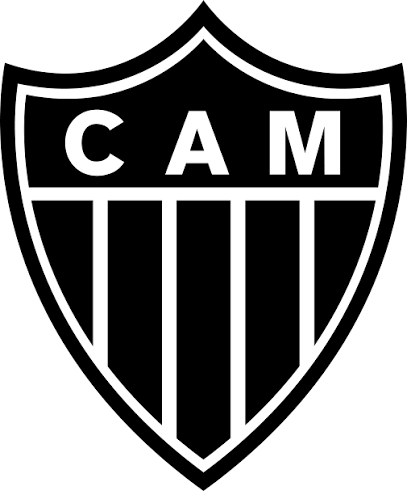
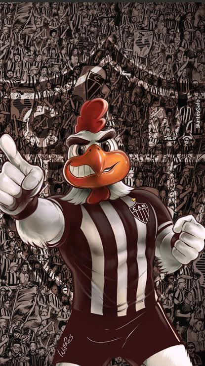

Fundação: 25 de março de 1908
O Clube Atlético Mineiro foi fundado no coreto do Parque Municipal, em Belo Horizonte, por um grupo de estudantes. Desde suas origens, permitiu que jogadores de todas as classes sociais vestissem sua camisa, o que lhe rendeu rapidamente a fama de "Clube do Povo".
O Galo tem a honra de ter sido o primeiro Campeão Brasileiro, na edição inaugural do torneio em 1971. Conhecido pelo lema "Eu Acredito", o time forjou uma identidade de resiliência e viradas históricas, cujo ápice foi a conquista da Copa Libertadores de 2013 sob a maestria de Ronaldinho Gaúcho. Em 2021, coroou sua trajetória com um ano perfeito, vencendo o Brasileirão e a Copa do Brasil no mesmo ano.